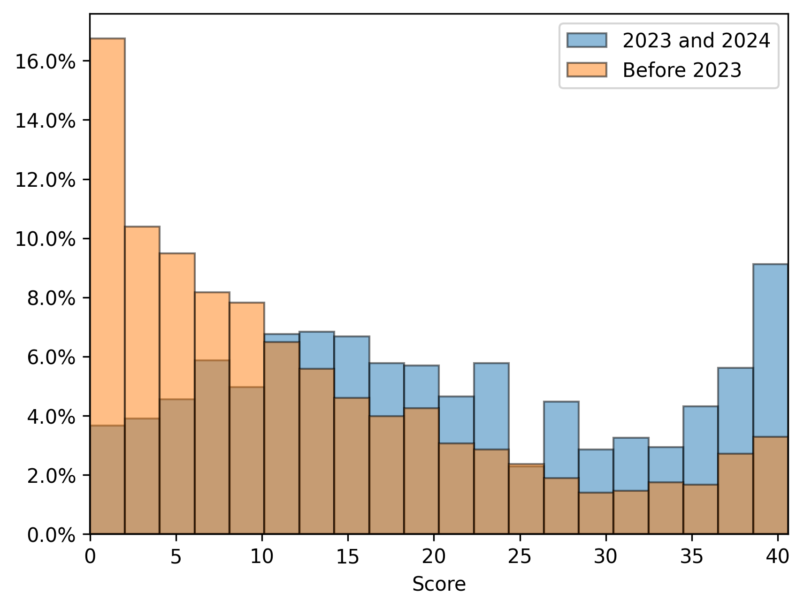

Nordisk Forkunnskapstest i Programmering

Hva kan studentene før de begynner å studere?

Studenter starter studiet med programmeringserfaring fra videregående og grunnskole
Fra 2023 av begynner studentene høyere utdanning med programmeringserfaring fra obligatoriske fag i barneskole og videregående. Dette kan ha store konsekvenser for hvordan programmering undervises på universitet og høyskoler.
Med kunnskapsløftet 2020 ble programmering en del av pensum for alle elever ved videregående og grunnskole, helt ned til andreklasse. Fra og med 2023 starter studenter høyere utdanning med programmeringserfaring. Hva er det de allerede kan? I hvor stor grad må kursene tilpasse sin undervisning? Finnes det studenter som rett og slett ikke trenger Introduksjon til programmering?
For å kunne besvare disse spørsmålene avholder vi Nordisk Forkunnskapstest i Programmering. Testens hovedhensikt var å kartlegge studentenes programmeringskompetanse og indentifisere misforståelser studentene har om grunnleggende programmeringskonsepter. Testen avholdes ved diverse universitet og høyskoler i Norge og i Sverige.

Dette prosjektet vil avholdes vært eneste år fremover. Ønsker du og din institusjon å delta? Påmelding finnes i sidefelt!

Hovedresultat høst 2024
Høsten 2024 ble forkunnskapstesten avholdt for andre gang. Resultatene indikerer at den generelle programmeringskompetansen i befolkningen vil øke betydelig i de neste 10 årene.
Testen ble gjennomført av 3 260 studenter ved ni ulike høyere utdanningsinstitusjoner i Norge og Sverige, og resultatet ble en gjennomsnittlig score på 39,9%, med denne fordelingen:

Resultatene viser at Kunnskapsløftet 2020 har hatt en positiv effekt på studentenes programmeringskompetanse. Studentene fra 2023–2024 presterte 18,8% bedre enn tidligere kull (se fordeling i sidefeltet). Forbedringen var tydelig i alle programmeringstemaer. Dette er en meget god utvikling bare 4 år etter endringen i læreplanen.
Dette er en positiv utvikling som gir høyt håp for fremtidige kull. Elevene i 2023 hadde programmering i alle tre årene på videregående, mens 2024-elevene også hadde programmering i 10. klasse. Innen 2032 vil programmering og algoritmisk tenkning være del av pensum fra 2. klasse. Vi forventer derfor at resultatene vil fortsette å forbedres, noe som vil styrke digital kompetanse i samfunnet.
Universiteter og høyskoler i Norge vurderer nå hvordan de best kan støtte disse forkunnskapene. Vi finner tre hovegrupper av studenter som må tilrettelegges for:
- De som kan lite eller ingenting om programmering
- De som behersker det grunnleggende
- De som er klare for mer avanserte programmeringskurs
For alle disse gruppene er det behov for å tilpasse undervisningen for å gi best mulig læring.

Hva læres på grunnskole og videregående?
Algoritmisk tenkning og programmering er nå del av læreplanmålene så tidlig som 2. klasse og følger elevene ut VG3.
- 2. trinn: Lage og følge regler og trinnvise instruksjoner i lek og spill
- 4. trinn: Lage algoritmer og uttrykke dem ved bruk av variabler, vilkår og løkker
- 5. trinn: Lage og programmere algoritmer med bruk av variabler, vilkår og løkker
- 8. trinn: Utforske hvordan algoritmer kan skapes, testes og forbedres ved hjelp av programmering
- 9. trinn: Simulere utfall i tilfeldige forsøk og beregne sannsynligheten for at noe skal inntreffe ved å bruke programmering
- 10. trinn: Utforske matematiske egenskaper og sammenhenger ved å bruke programmering
- 1T: Formulere og løse problemer ved hjelp av algoritmisk tenking, ulike problemløsningsstrategier, digitale verktøy og programmering
- S2 og R2: Utforske rekursive sammenhenger ved å bruke programmering og presentere egne framgangsmåter
Høsten 2022 ble blant annet følgende programmeringsoppgaver gitt på eksamen i 1T og R1:


Mye av det elevene i VGS allerede har lært finner vi et stykke ut i semesteret i introduksjonskursene i høyere utdanning. Vil pensum i programmeringskursene på universitet og høyskoler måtte endres på grunn av denne nye kunnskapen?
Nyhetsartikler om testen
Hva er forskjellen?
Her ser vi forskjellen på studentene som har hatt algoritmisk tenkning og programmering i obligatorisk pensum (2023 and 2024) sammenlignet med de som hadde den gamle lærerplanen (Before 2023). Disse resultatene indikerer at studentene med den nye lærerplanen er gjennomsnitlig mer kompetent.
Deltagelse
Ønsker du og din instutisjon å delta i dette prosjektet? Vi inviterer til deltagelse i utarbeidelse og utførelse av Nordisk Forkunnskapstest i Programmering
Meld din interesse her: